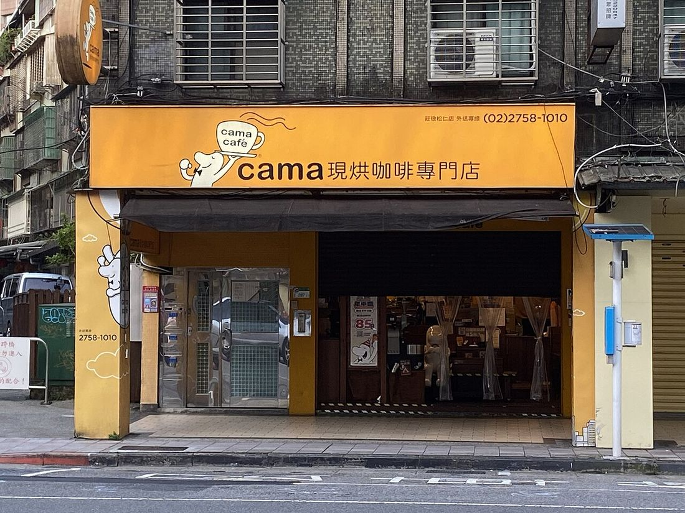
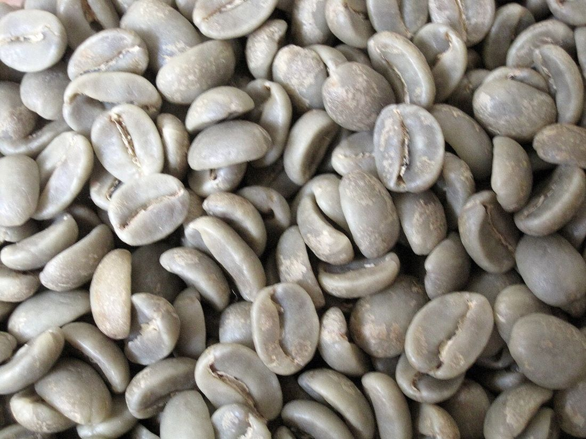

台北老店．中山與東區
cama：每家店都烘豆的連鎖
有一家連鎖咖啡店，每一家門市都放著自己的烘豆機。

它是 cama。創辦人何炳霖是高雄人，在廣告圈做了將近二十年。
從金山南路開始
報導說，二〇〇四年，他和太太許建珠在台北金山南路開了第一家咖啡店。
創業初期賣過果醋、做過複合式餐廳，還被員工做假帳，賠了約三百萬。
二〇〇六年，品牌在和平東路辦公區開張，主打外帶外送。
每家店都烘豆
每家店約十五坪，店員在門口手挑生豆、現場烘。二〇一七年的報導說，烘好的豆子通常三天內用完。
何炳霖自己考了美國精品咖啡協會的杯測師認證，加盟主也要通過烘焙評比。
二〇二三年的報導說，分店已超過一百七十家；二〇二五年改新店型，烘豆機還是放在每一家店裡。
專業點：為什麼要手挑豆
・手挑＝把瑕疵豆挑掉
・黑豆、發酵豆會嚴重破壞風味
・精品標準：350 克生豆樣本裡，一顆這類瑕疵豆都不能有
・烘好的豆子越新鮮，香氣越完整
老照片與街景

店家資訊
- 店家
- CAMA COFFEE ROASTERS 豆留文青
- 地點
- 台北市信義區光復南路133號（松山文創園區）
- 現況
- 營業中
- 營業時間
- 常有變動，出發前請再確認
- IG 影片
- 2/2 上片
你有注意過門口的烘豆機嗎？最常點哪一杯？
到 IG 留言告訴我們
到 IG 留言告訴我們